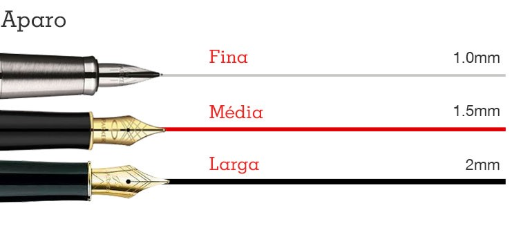
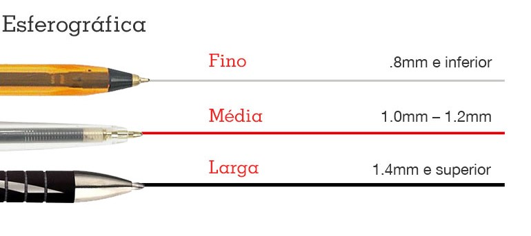
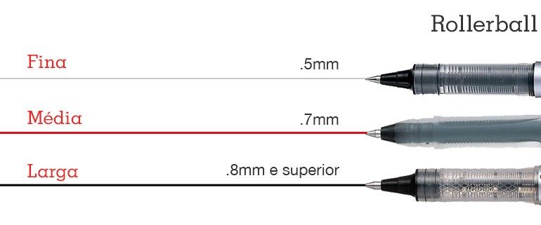
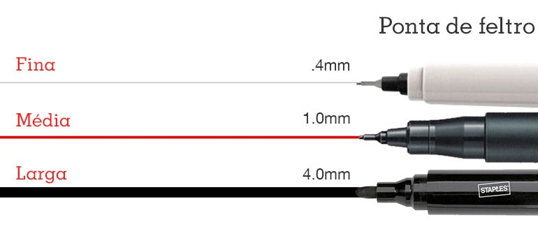

|
Caneta |
Processamento e Representação de Informação |
Índice |
IntroA caneta é um instrumento utilizado para a escrita utilizando tinta. Varia das mais simples às mais sofisticadas e elegantes, das de uso comum aos profissionais, diferindo também em matéria de cor. História da canetaO revisor tipográfico húngaro László Bíró inventou, em 1932, uma caneta que não borrava e cuja tinta não secava no depósito, como fazia a antiga caneta-tinteiro. Na oficina do jornal em que trabalhava, na cidade de Budapeste, deteve-se a observar o funcionamento da rotativa. O cilindro se empapava de tinta e imprimia o texto nele gravado sobre o papel. Com a ajuda de seu irmão Georg, que era químico, e do amigo Imre Gellért, um técnico industrial, Biro encontrou a solução. Acondicionou a tinta dentro de um tubo plástico. A tinta, pela força de gravidade, descia para a ponta do tubo. Nessa mesma ponta, ele colocou uma esfera de metal que, ao girar, distribuía a tinta de uma maneira pluriforme pelo papel. A bolinha da ponta da caneta, que passa tinta para o papel, normalmente é de carbeto de tungstênio, metal usado em balas de revólver e 4 vezes mais resistente do que o aço. Tipos de canetaUma caneta aparo utiliza tinta à base de água, que normalmente possui cargas descartáveis. Vantagens: muitas pessoas a consideram a caneta ideal para escrever, com um traço de tinta de puro prazer. A sua ponta flexível permite demonstrar carácter na escrita. Desvantagens: esta caneta também é conhecida por facilmente borratar, criando nódoas difíceis de remover da roupa, documentos e mobília. A caneta esferográfica foi algo que revolucionou o mundo do material de escritório, tornando-se um dos instrumentos de escrita mais populares. O movimento rotatório de uma pequena esfera que dispensa uma tinta à base de óleo, elimina o problema das manchas de tinta. Vantagens: deal se estiver à procura de uma caneta que não precise de manutenção e tenha uma tinta de longa duração. Graças à sua função de esferográfica, a tinta não borrata à medida que escreve. Desvantagens: uma escrita mais expressiva fica limitada, devido à bola presente na ponta da caneta. A tinta à base de óleo pode criar aglomerados de tinta na caneta. Canetas rollerball utilizam o mesmo tipo de dispensador que as canetas esferográficas. A diferença é que a tinta é à base de água em vez de óleo. Vantagens: A escrita é bem mais suave com esta caneta. Uma alta saturação cria um texto mais atrativo. Desvantagens: A tinta pode acabar consideravelmente mais rápido do que em canetas esferográficas. A fórmula à base de água é vulnerável a manchar. Caneta de feltro, também conhecida como marcador, tem uma ponta composta por fibras de feltro, ensopadas numa tinta à base de álcool. Vantagens: Estes marcadores são uma maneira fácil de adicionar cor, produzindo algo criativo e definido. Desvantagens: Não selar o marcador com a sua tampa após utilizar, irá resultar na secagem do feltro, perdendo este a sua funcionalidade. ~Canetas de gel utilizam uma tinta à base de água para uma escrita mais suave. Vantagens: Estas canetas oferecem uma grande variedade de cores intensas. A escrita é mais suave do que uma caneta rollerball. Desvantagens: Não se pode esquecer de colocar a tampa depois de usar – a tinta desta caneta é conhecida por secar rapidamente. Se usada com frequência, a caneta tende a durar apenas algumas semanas. Comparação entre canetas
|